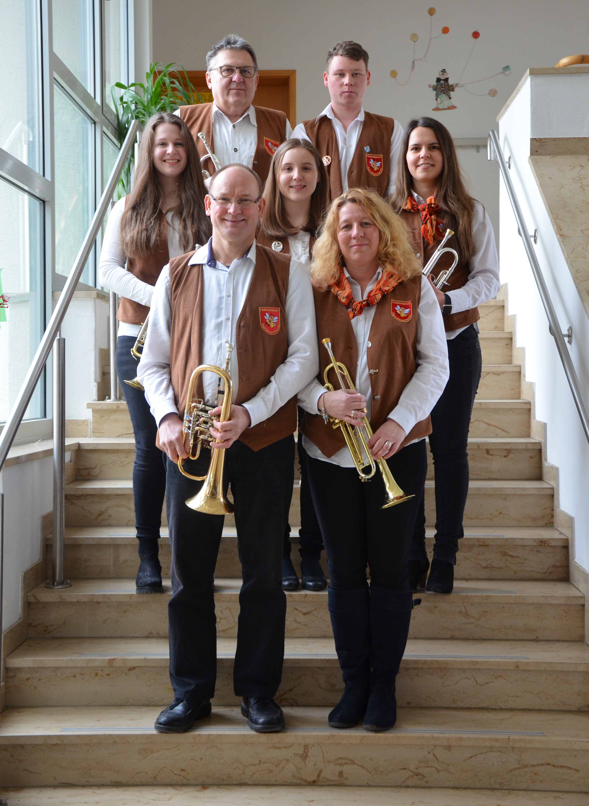

Die MusikantInnen
| Dirigent | Lukas Schrüfer |

| Querflöte | Andrea Hacker, Katja Raithel |
| Klarinette | Julius Spätling, Lena Kropf, Linda Hacker, Linda Rattenberger, Martina Leonhard |
| Saxophon | Jannis Hagen, Vera Hauenstein |
| Fagott | Petra Summa |

| Trompete | Anna Polster, Christine Arneth, Felix Arneth, Lisa Kropf, Maximilian Arneth, Nina Ahner, Thomas Zöller, Willi Rödel |
| Tenorhorn | Andreas Löhr, Andreas Kropf, Helen Leonhard, Moritz Hacker, Leonard Moder |
| Waldhorn | Matthias Feilner |
| Schlagzeug | Laurens von Assel, Marc-Robin Reissenweber |